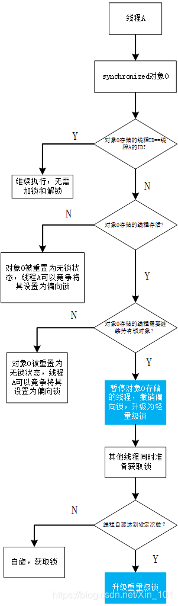

锁升级过程
synchronized锁升过程：偏向锁->轻量级锁->重量级锁。

锁升级流程
synchronized锁升级的具体流程如图所示。

偏向锁->轻量级锁
线程A请求synchronized对象，比较同步块对象存储的线程S ID与线程A ID是否相同，如果相同，那么执行同步块，无需使用CAS加锁或解锁；如果不同，那么检查synchronized对象中记录的线程S是否存活，如果线程S未存活，那么synchronized对象被重置为无锁状态，线程A通过竞争将其设置为偏向锁，此时，synchronized对象头中存储线程A的ID，如果线程S存活，那么查找线程S的栈帧信息，如果线程S仍要继续持有该synchronized对象，那么暂停线程S，撤销偏向锁，升级为轻量级锁，如果线程S不再使用该synchronized对象，将synchronized对象设为无锁状态，重新偏向线程A。
轻量级锁->重量级锁
线程A获取轻量级锁时先将synchronized锁的对象头复制一份到线程A在栈帧中创建的存储锁记录空间，然后使用CAS将对象头中的内容替换为线程A存储的所记录地址。如果线程A复制对象头时，线程B也准备获取锁，复制对象头到线程B的锁记录空间，当线程B进行CAS时发现，线程A已经将对象头替换，线程B的CAS失败，线程B尝试使用自旋等待线程A释放锁。如果线程B自旋次数到了上限，线程A仍没有释放锁，线程B仍在自选等待，此时，线程C又来竞争锁对象，轻量级锁会膨胀为重量级锁。重量级锁将未获得锁的线程阻塞，不消耗CPU，防止CPU空运行。
锁信息存储位置
锁：为对象加锁，因此，锁信息存储在对象中，而对象中是在哪里存储呢？
首先了解：对象结构https://blog.csdn.net/Xin_101/article/details/117568632
锁信息存储在对象头MarkWord中。
为什么要使用重量级锁
因为轻量级锁（自旋锁CAS）在自旋等待时会占用CPU资源，竞争的锁（线程）越多，CPU消耗越大，容易导致CPU过载。
为什么使用偏向锁或轻量级锁
效率高。
小结
| 序号 | 锁 | 优点 | 缺点 | 应用场景 |
|---|---|---|---|---|
| 1 | 偏向锁 | 避免CAS，无需加锁或解锁，和非同步方法时间相差纳秒级别 | 竞争的线程较多时，会带来额外的锁撤销消耗 | 基本没有线程竞争的同步场景 |
| 2 | 轻量级锁 | 竞争的线程不会阻塞，使用自旋，提高程序响应速度 | 长时间自旋，CPU消耗较多 | 少量线程竞争锁对象，并且线程持久锁时间不长，追求响应速度的场景 |
| 3 | 重量级锁 | 竞争的线程阻塞，不会导致CPU空运行，节约CPU资源 | 线程阻塞，响应时间长 | 很多线程竞争锁，并且锁持有时间较长，追求吞吐量的场景 |